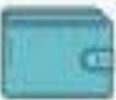
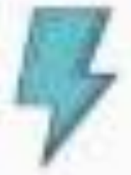

Sitesauce converts dynamic websites{like Ghost-powered websites} into static sites, and keeps content in sync
Enjoy all the benefits static sites provide while kooping everything good about the backend
|  |  | |
|---|---|---|
| Minimal costs | Blazing-fast load times | Infite soaling |
| Sitesauce host your static vercel (formely ZET), offering unlimited bandwidth and their world-class CON for no additional cost | Executing expensive operations on build and serving your sites through vercel's world-class CDN results in semi-intantereous page loads | With guarenteed zero-downtime and edge regions around the world a thousand concurrent visit load as fast as a single one |